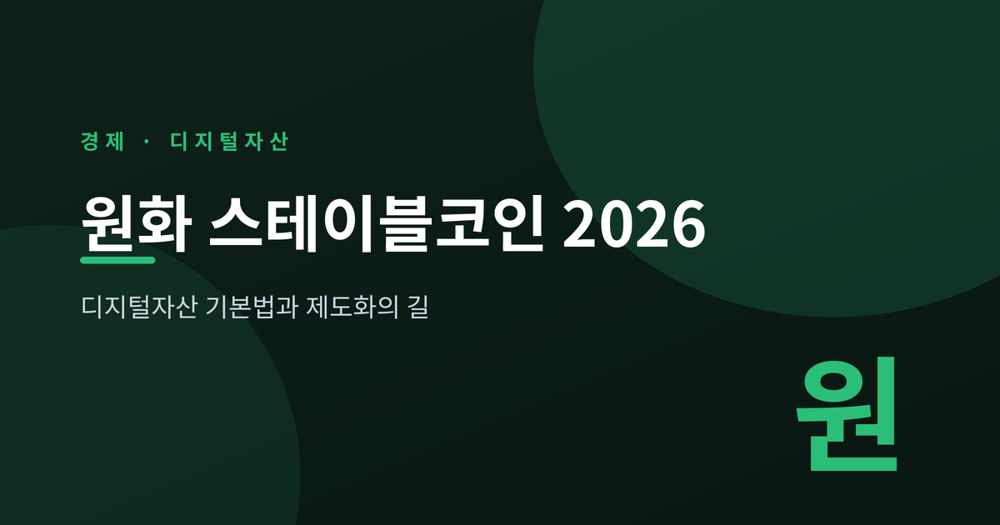
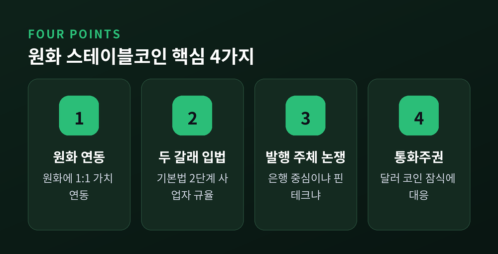
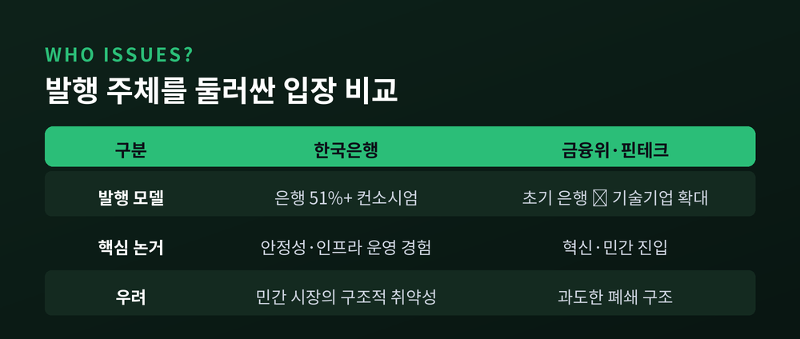
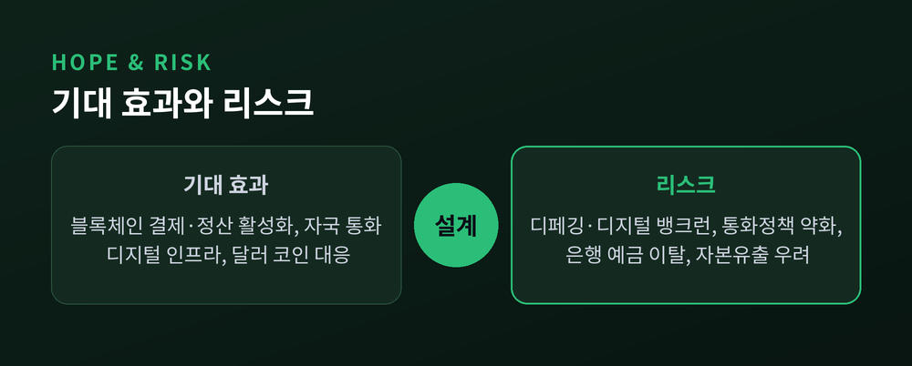

디지털자산 기본법과 제도화의 길

이번 글에서는 원화 스테이블코인과 디지털자산 기본법 2단계 입법을 정리해 보겠습니다.
핵심부터 먼저 말씀드립니다. 원화에 1:1로 가치를 연동한 스테이블코인을 제도권으로 들이는 작업이 2026년의 큰 숙제로 남아 있습니다. 다만 발행 주체를 둘러싼 이견 탓에 입법은 여전히 논의 중입니다. 무엇이 쟁점이고 무엇이 걸려 있는지, 차분히 짚어보겠습니다.
스테이블코인은 가치 변동을 최소화하도록 설계된 암호화폐입니다.
주로 달러 같은 법정화폐에 1:1로 가치를 연동(페그)합니다. 변동성이 큰 비트코인과 달리 결제·송금·정산 수단으로 쓰일 수 있다는 점이 특징입니다.
원화 스테이블코인은 한국 원화(KRW)에 가치를 연동한 스테이블코인을 뜻합니다.
문제는 시장의 현실입니다. 현재 국내에는 달러 연동 코인이 사실상 통용되고 있습니다. 원화 코인 제도화가 늦어질수록 "달러 코인 의존이 커진다"는 우려가 나옵니다.

세계는 이미 움직이고 있습니다.
2025년 7월 미국은 연방 차원의 스테이블코인 기본법인 GENIUS Act에 서명했습니다. 이후 캐나다·영국 등도 규제 도입을 본격화했습니다.
시장 규모도 가파릅니다. 2026년 4월 기준 달러 연동 스테이블코인 시가총액은 약 3,170억 달러로 집계됩니다. 테더(USDT)가 약 67%, 서클(USDC)이 약 22%를 차지합니다. 미 재무부는 2028년 최대 2조 달러까지 시장이 커질 것으로 내다봅니다.
거래 규모도 폭증했습니다. 2025년 연간 거래액은 약 4경 8,000조 원으로 1년 새 약 72% 늘었습니다.
이런 제도화 경쟁 속에서 한국이 입법을 미루면 달러 코인의 국내 침투가 빨라질 수 있습니다. 이것이 원화 코인 제도화의 핵심 명분으로 작용합니다.
디지털자산 기본법은 디지털자산을 두 갈래로 나눕니다.
하나는 자산연동 디지털자산, 즉 스테이블코인입니다. 발행에 인가가 필요합니다. 다른 하나는 일반 디지털자산으로, 발행에 신고가 필요합니다.
2단계 입법은 이용자 보호와 발행·공시·배상책임 등 사업자 규율을 다룹니다.
이 2단계가 멈춰 선 이유는 분명합니다. 금융위원회와 한국은행이 발행 주체를 두고 좀처럼 이견을 좁히지 못했기 때문입니다.
여당은 당초 2026년 2~3월 처리를 목표로 했습니다. 지금은 사정이 달라졌습니다. 6·3 지방선거와 국회 원 구성 지연, 정부안 미공개가 겹치면서 일정이 하반기로 밀린 것으로 보입니다.
6월 22일 토론회는 선거 이후 첫 입법 논의였습니다. 더불어민주당은 원 구성을 마친 뒤 하반기에 속도를 내겠다는 입장을 밝혔습니다. 다만 여야·정부의 법안이 8개에 달하고 정부안이 아직 공개되지 않아 "골든타임을 놓친다"는 비판도 함께 나옵니다.
가장 뜨거운 쟁점은 발행 주체입니다.
한국은행 등은 이른바 '51% 룰'을 밀고 있습니다. 원화 스테이블코인을 발행하려면 은행이 지분 51% 이상을 보유한 컨소시엄이어야 한다는 안입니다.
한국은행의 논리는 안정성입니다. 금융 규제 이해도와 준법·리스크 관리 체계, 지급결제·정산 인프라 운영 경험을 갖춘 은행 중심으로 시작해 점진적으로 넓히는 것이 현실적이라는 것입니다.
핀테크 업계의 시선은 다릅니다. 은행 중심 구조가 지나치게 폐쇄적이면 핀테크·블록체인 기업의 참여 여지가 줄어 혁신이 위축될 수 있다고 봅니다. 사실상 민간 진입을 막는 설계라는 비판도 나옵니다.
금융위는 절충안을 검토합니다. 초기에는 은행 중심으로 출발하되 향후 기술기업 참여를 넓히고, 컨소시엄 내 최대주주는 기술기업이 될 수 있도록 길을 열어두자는 구상입니다. 세부 기준은 시행령에서 조정하도록 위임됩니다.
구조적 난점도 있습니다. 은행은 은행법상 다른 회사 지분을 원칙적으로 15%까지만 가질 수 있습니다. 발행사 지분 50%+1주를 채우려면 은행 4곳 이상의 연합이 필요한 셈입니다. 국내 은행이 15곳 안팎이라 컨소시엄 결성 자체가 만만치 않습니다.

이 공백 속에서 시장은 먼저 움직였습니다.
하나금융지주가 BNK·iM·SC제일·OK저축·JB금융 등과 협약을 맺으며 은행 6곳을 확보해 컨소시엄을 가장 먼저 공식화했습니다. KB금융·신한금융·토스 등도 공동 대응을 모색합니다. "발행은 은행, 유통은 핀테크·거래소"라는 생태계 구도가 형성되는 양상입니다.
코인의 신뢰는 결국 뒷받침하는 자산에서 나옵니다.
법안은 발행 잔액의 100% 이상을 현금·요구불예금·국채 등 유동성 높은 실물자산으로 보유하도록 합니다.
이용자 보호 장치도 들어갑니다. 발행인이 파산하더라도 준비자산은 이용자 상환에 우선 배정되며, 압류·담보로 쓸 수 없습니다. 상환을 청구하면 3영업일 이내에 돌려주도록 법적으로 의무화합니다.
이자 지급은 금지됩니다. 스테이블코인이 예금처럼 변질돼 금융시장을 흔드는 일을 막기 위해서입니다.
기대 효과는 분명합니다.
명확한 규율이 갖춰지면 원화 스테이블코인 발행·유통이 가능해지고, 블록체인 기반 결제·정산 서비스가 본격화될 수 있습니다. 달러 코인 잠식에 맞서 자국 통화 기반의 디지털 결제 인프라를 확보한다는 의미도 큽니다.
반면 한국은행은 7가지 위험을 경고합니다.
디페깅, 디지털 뱅크런, 소비자 보호 공백, 금산분리 훼손, 외환·자본규제 우회, 통화정책 약화, 금융중개기능 위축입니다. 예금보험이나 최종대부자 기능이 없어 신뢰가 흔들리면 코인런으로 번질 수 있다는 점, 은행 예금이 빠져나가 대출 여력이 줄 수 있다는 점이 특히 거론됩니다.

기대와 우려가 같은 무게로 놓여 있습니다. 그래서 발행 주체와 세부 기준을 어떻게 설계하느냐가 더 중요해집니다.
연계 이슈도 함께 갑니다. 정부는 2026년 중 가상자산 현물 ETF 도입도 추진하고 있습니다. 다만 자본시장법 개정과 수탁 인프라 정비가 선행 과제로 남아 있습니다.
정리하면 이렇습니다.
원화 스테이블코인은 기술의 문제라기보다 신뢰와 설계의 문제입니다. 누가 발행하고, 무엇으로 뒷받침하며, 위험을 어떻게 가두느냐가 전부입니다.
— "속도보다 설계가 먼저다."
서둘러 만든 제도가 오래가는 경우는 드뭅니다. 늦더라도 단단하게 짜인 틀이 나오기를, 차분히 지켜보면 좋겠습니다.